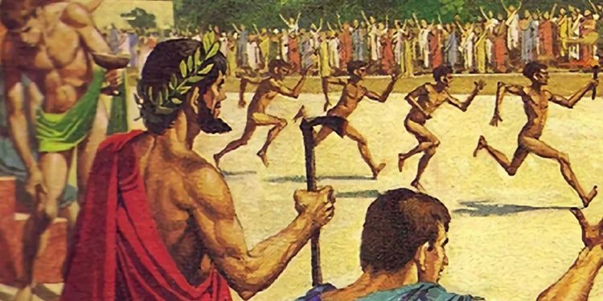
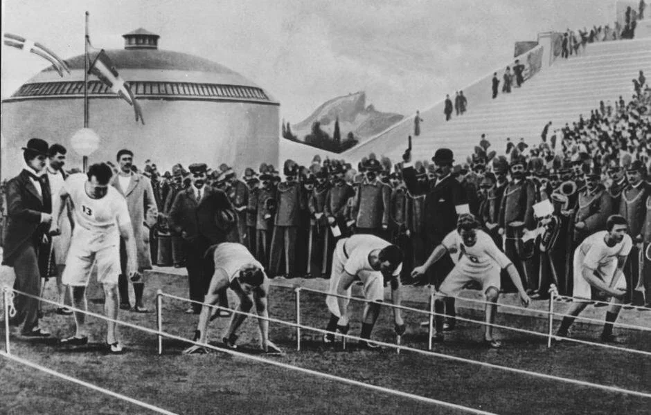

Изначально навыки бега нашим далеким предкам нужны были, чтобы убегать от хищников. Но уже неадертальци стали охотиться систематически, для чего им также пригодилось умение бегать.

Изначально навыки бега нашим далеким предкам нужны были, чтобы убегать от хищников. Но уже неандертальцы стали охотиться систематически, для чего им также пригодилось умение бегать. В основном это была загонная охота на крупную дичь.Бегали на короткие дистанции, но быстро - гнались за зверем, чтобо метнуть копеье с наименьшего расстояния. В ДНК неандертальцев ученые нашли участки, похожие на те, что есть у современных спорсменов, преуспевающих в спринте.
Ученые подсчитали, что охотник плейстоценовогог перилда мог развивать скорость до 37-40 километров в час. И это - босиком по пересеченной олимпийский чемпион по бегу, на стометровоке на пике развивал скорость до 44 км/ч.
На самом древнем из известных рельефных изображений на спортивную тему запечатлен фараон Джосер (правил около 2635–2611 гг. до н. э.), совершающий ритуальный бег для подтверждения своей силы и молодости. Ритуал был частью юбилейного праздника Хеб-сед, который устраивался после тридцати лет царствования. Фараон должен был пробежать определенный путь, это была символическая демонстрация его способности править.
Первые Олимпийские игры, о которых сохранилась достоверная запись, состоялись в 776 г. до н. э. Тогда в программу состязаний входил бег на 192 м (одну стадию).
В 724 г. до н. э. появился забег на 384 м, а спустя четыре года — бег на 1344 м. Со временем дистанция увеличивалась и дошла до 4608 м. Также существовал бег гоплитов на 384 м. Они бежали в шлеме, поножах и со щитом, что добавляло спортсменам 8–9 кг веса.
С приходом христианства Олимпийские игры стали рассматриваться как проявление язычества, в результате чего в 394 г. н. э. они были запрещены императором Феодосием I, после чего соревнования по бегу практически не проводились. Дальнейшее развитие бег получил лишь в XIX веке.
Первые соревнования по легкой атлетике состоялось в 1837 году в Велекобритании.
После успеха мероприятия, годом позднее, провели несколько десятков таких соревнований в разных городах.
В середине XIX века в соревнования по легкой атлетике добавили еще две дисциплины — бег с препятствиями и бег на короткие дистанции.